| \(\dot{V}\) (cm3 min-1) | CA,in (M) | CB,in (M) | CY,in (M) | CZ,in (M) | CY,out (M) |
|---|---|---|---|---|---|
| 50 | 0.5 | 0.5 | 0.5 | 0.5 | 0.89 |
| 50 | 0.5 | 0.5 | 0.5 | 1.0 | 0.85 |
| 50 | 0.5 | 0.5 | 0.5 | 2.5 | 0.75 |
| 50 | 0.5 | 0.5 | 0.5 | 5.0 | 0.63 |
| 50 | 0.5 | 0.5 | 1.0 | 0.5 | 1.39 |
| 50 | 0.5 | 0.5 | 1.0 | 1.0 | 1.35 |
| 50 | 0.5 | 0.5 | 1.0 | 2.5 | 1.24 |
| 50 | 0.5 | 0.5 | 1.0 | 5.0 | 1.13 |
11 Analysis of Kinetics Data from a CSTR
This section of Reaction Engineering Basics focuses upon the analysis of kinetics data for the purpose of assessing the accuracy of a proposed rate expression. Chapter 8 presented a general introduction to kinetics data analysis and Chapter 9 examined the analysis of kinetics data generated using a BSTR. This chapter is like Chapter 9 except it is focused on the analysis of kinetics data generated using a CSTR.
11.1 Laboratory CSTRs
There are many similarities between BSTRs and CSTRs. The primary difference is that fluid continually flows in and out of a CSTR. Basically CSTRs are BSTRs with inlet and outlet flow streams. Other than the stopped flow reactor, the BSTRs described in Chapter 9 could be converted to CSTR simply by adding a flow in and a flow out. In the case of the recirculation loop reactor, Figure 9.2, the flow in and out should be small compared to the recirculation flow within the loop. As with the BSTR, one of the most important characteristics of a CSTR is that it is perfectly mixed. As discussed below, when a CSTR is used to generate kinetics data, it is preferable to operate the CSTR at steady state. Consequently, in addition to assessing the mixing before experiments begin, it is also important to verify steady-state operation while conducting the experiments.
11.1.1 Testing the Ideality of a CSTR
Given the similarities between BSTRs and CSTRs, most of the discussion in Chapter 9 applies here, as well. Specifically, one of the most important requirements is that the reactor must be perfectly mixed. Smoke tests and the measurement of the reactor response as the agitation rate is increased again can be used to test for perfect mixing. In addition, a property known as the residence time distribution can be used to assess how well a reactor conforms to the assumptions of an ideal CSTR. Essentially, it provides a necessary, but not sufficient, criterion that the laboratory reactor must satisfy. The measurement and use of the residence time distribution will be presented in Chapter 23.
11.2 CSTR Kinetics Experiments and Data
The nature of kinetics experiments involving a CSTR and the data they generate is different in some respects from a BSTR. To prevent the generally strong temperature dependence of reaction rates from masking weaker composition and pressure effects, experiments should be performed in blocks where all of the experiments in a block are performed at the same temperature. The first two examples in Chapter 9 showed how each block of data can then be analyzed to estimate the rate coefficient at the temperature used in that block. Then, once all of the blocks have been analyzed, the Arrhenius expression can be fit to the resulting \(k\) vs. \(T\) data to estimate the pre-exponential factor and the activation energy.
When using a CSTR to generate kinetics data, it should operate at steady state. There are two good reasons for this. First, the temperature of the reacting fluid is likely to change during transient operation, and that prevents the use of same-temperature data blocks. Second, when the reactor operates at steady state, data analysis is greatly simplified. Specifically, the steady-state reactor design equations are algebraic-transcendental equations (ATEs) whereas the transient design equations are initial value ordinary differential equations (IVODEs). Additionally, when the reactor operates at steady state at a known temperature, the mole balance design equations can be solved independently of the energy balances, so only the mole balances are needed when analyzing steady-state CSTR kinetics data.
In a typical CSTR kinetics experiment, the rate of fluid flow into the reactor is set along with the composition of the feed fluid. The pressure and temperature are also adjusted to their desired values for that experiment. Once these inputs have been fixed, the flow rate and composition of the fluid leaving the reactor is monitored. Initially the outlet composition and flow rate may change over time. This indicates that the CSTR has not yet reached steady state. When the outlet flow rate and composition become constant, the CSTR has reached steady state, and the response is measured, and that concludes the experiment. This is very different from BSTR experiments where the response was measured several times during a single experiment. The reason, of course, is that the composition changes during a BSTR experiment wherease nothing changes during a steady-state CSTR experiment. Consequently, the generation of kinetics data using a CSTR typically involves many more experiments compared to when a BSTR is used.
11.3 Design of CSTR Experiments
In isothermal BSTR experiments the initial composition and pressure of the reacting fluid and the elapsed time at which the response was measured were the inputs that were adjusted so that the experiments sampled a wide range of compositions. In a sense, the same is true of flow reactor experiments (both CSTR and PFR), but in flow reactors the space time, Equation 6.1, determines how long the reaction is allowed to proceed instead of the elapsed wall-clock time (see Chapter 6). This means that for flow reactors there are more reactor inputs that can be adjusted in order to vary the space time.
As noted in Chapter 9, preliminary studies typically define ranges of interest for temperature, pressure, and composition, and the purpose of kinetics experiments is to generate kinetics data that span those ranges. For each factor (e.g. the temperature, pressure, the concentration of reagent A, the concentration of reagent B, etc.) a set of values (also called levels) are chosen that span its range of interest. Increasing the number of levels improves the resolution of the effect of that factor upon the reaction rate. At the same time, increasing the number of levels increases the number of experiments that must be performed. Once the levels have been chosen for each factor, a factorial design like that described in Chapter 8 can be used to specify the experiments that will be performed.
11.3.1 Adjusted Experimental Inputs
Temperature is always an important factor, and as previously noted CSTR experiments are conducted in blocks where the steady-state temperature is the same for all experiments in each block. The pressure is constant in CSTR experiments, so if pressure is a factor of interest, the reactor pressure becomes one of the adjusted inputs.
The concentrations (or, for gases, partial pressures) within the reactor are the ones that need to span their range of interest, but unfortunately they cannot be adjusted directly. Instead, the composition and flow rate of the feed entering the reactor are adjusted. Depending upon the configuration of the feed system, the variables that can be adusted include the molar flow rates of the individual reagents or the volumetric flow rate of the feed and the concentrations of the reagents in that feed. Changing these quantities effectively changes the starting composition and the space time. (This assumes that the same reactor will be used in every experiment so the reactor volume cannot be adjusted to vary the space time.)
11.3.2 Experimental Responses
It was noted in Chapter 9 that there are many different quantities that can be used as the experimental response. That discussion won’t be repeated here. The response should be a quantity that is directly related to the composition of the fluid leaving the reactor or to the extent of reaction relative to the reactor feed. In other words, after measuring the response and knowing the feed, it should be possible to calculate the concentration of every reagent in the product stream leaving the reactor.
11.4 CSTR Data Analysis
The focus of this section is the analysis of a block of experimental CSTR kinetics data where the steady-state reactor temperature was the same in every experiment. Once all blocks have been analyzed as described here, the Arrhenius expression can be fit to resulting rate coefficients for the block temperatures. The fitting of the Arrhenius expression has been discussed and illustrated several times in Chapter 4, Chapter 6, and Chapter 9, and should be familiar at this point. It won’t be repeated again here, but instead, analysis of a constant-temperture block of CSTR kinetics data using the CSTR reactor design equations is featured.
Chapter 6 explained that when a reactor operates at a constant, known temperature, the mole balances for the reactor can be solved independently of the other reactor design equations. Consequently the steady-state form of the ideal CSTR mole balance, Equation 6.30, is the only equation needed to model the reactor used to generate CSTR kinetics data. In Reaction Engineering Basics the kinetics data analysis problems are limited to systems where only one reaction is taking place. In that situation, it is not necessary to use an index to differentiate between multiple reactions, and the steady-state mole balance takes the form shown in Equation 11.1.
\[ 0 = \dot{n}_{i,in} - \dot{n}_i + \nu_i r V \tag{11.1}\]
When a rate expression is substituted into Equation 11.1 it will introduce the concentration (or possibly for gases, partial pressure) of one or more reagents. In order to solve the mole balances for the outlet molar flow rates of the reagents, the concentration or partial pressure must be expressed in terms of the molar flow rates. Assuming liquids to be incompressible ideal mixtures, the volumetric flow rate is constant and the concentration is related to the molar flow rates as shown in Equation 1.15.
\[ C_i = \frac{\dot n_i}{\dot V} \]
CSTRs operate at constant pressure, and when used in kinetics experiments, the temperature is also constant. For gas phase systems, however, the volumetric flow rate in Equation 1.15 will change if the reaction causes a change in the total number of moles. Using the ideal gas law to express the volumetric flow rate in terms of the molar flow rates yields the preferred expression for the concentration of a gas phase reagent, \(i\), shown in Equation 11.2.
\[ C_i = \frac{\dot n_iP}{RT\displaystyle \sum_i\left( \dot{n}_i \right)} \tag{11.2}\]
If the rate expression for a gas-phase reaction uses partial pressures instead of concentrations, the partial pressure is related to the molar flow rates as shown in Equation 11.3.
\[ P_i = y_iP = \frac{\dot{n}_iP}{\displaystyle \sum_i\left( \dot{n}_i \right)} \tag{11.3}\]
11.4.1 Analysis Using a Response Function
The analysis of CSTR kinetics data using a response function is analogous to the analysis of BSTR kinetics data using a response function. The only difference is that the reactor model is a set of ATEs that must be solved numerically instead of a set of IVODEs. Briefly, the procedure is a follows. A response function is created. It is passed the adjusted experimental inputs and values for the rate expression parameters as arguments. Within the response function, the reactor model (the ATEs) is solved for each experiment to find the outlet molar flow rates of all reagents. The results are then used to calculate the model-predicted value of the response that was measured in the experiments. The response function returns the model-predicted responses for all of the experiments.
As noted, the CSTR mole balance design equations are ATEs that will be solved numerically. See Appendix H for a brief overview of the numerical solution of ATEs. A guess for the unknowns is typically needed when solving ATEs numerically. For this reason, it is useful to also make the experimental responses available within the response function. They can be used to make guesses for the unknowns in the mole balances. While the rate expression parameters are being estimated, the response function is called from within the paremeter estimation software. That software may provide a mechanism for additionally passing the experimental responses to the response function as arguments. If it doesn’t, they could be read from a file within the response function. Just as the exact calling and return variables depend upon the parameter estimation software, so does the mechanism for making the experimental responses available within the response function.
The response function is then provided to parameter estimation software along with the adjusted experimental inputs, the experimental responses, and a guess for the parameters. The parameter estimation software returns the estimated values of the kinetics parameters, some measure of the uncertainty in the estimates, and the coefficient of determination, \(R^2\). The estimated parameters can then be used to calculate the model-predicted responses for the experiments. From these, a parity plot and residuals plots can be created as described in Chapter 8. If the rate expression is accurate, the following criteria will be satisfied.
- The coefficient of determination, \(R^2\), will be close to 1.
- The uncertainty in each parameter estimate will be small compared to the estimate.
- The points in the parity plot will all be close to a diagonal line (\(y_{\text{expt}} = y_{\text{model}}\)).
- In each residuals plot, the points will scatter randomly about zero (the horizontal axis), and no systematic deviations will be apparent.
11.4.2 Analysis Using a Linearized Model
When only one reaction is taking place, as is the case in Reaction Engineering Basics kinetics data analysis problems, the reactor can be modeled using only one mole balance on a reactant or product in the reaction. When this is done, the apparent extent of reaction is used to relate the amounts of all other reagents to the reagent for which the mole balance is written. If that one mole balance can be rearranged into a linear form, the model can be fit to the experimental data using linear least squares. This was described and illustrated in Chapter 8 and Chapter 9 and won’t be repeated or illustrated in this chapter.
One point to note, however, is that with CSTR kinetics data, the mole balance is already an ATE. It isn’t necessary to integrate an IVODE before linearizing it. Indeed, for a simple rate expression with only one rate coefficient of the form shown in Equation 11.4, the mole balance, Equation 11.1, will already have the linear form shown in Equation 11.5 if \(y\) and \(x\) are defined as shown in Equation 11.6 and Equation 11.7.
\[ r = kf\left(\dot{n}_i,P\right) \tag{11.4}\]
\[ y=kx \tag{11.5}\]
\[ y = \dot{n}_i - \dot{n}_{i,in} \tag{11.6}\]
\[ x=\nu_i V f\left(\dot{n}_i,P\right) \tag{11.7}\]
11.5 Examples
The start of the Examples section of Chapter 9 noted that before a reaction engineer can solve a problem, they must identify what type of problem it is. The following callout was provided with the suggestion that the reader mentally insert it at the start of every example in that chapter and in Chapter 11 and Chapter 10.
Click Here to See What an Expert Might be Thinking after Reading each Problem Statement in this Chapter
This assignment involves “kinetics data analysis.” I realize that because the problem statement includes 3 distinguishing characteristics of kinetics data analysis assignments.
- The problem statement describes reactor experiments involving a known reaction.
- The data resulting from performing those experiments are provided.
- The assignment is to generate a rate expression or estimate the parameters in a proposed rate expression and then assess its accuracy using those data.
I know that the preferred way of performing experiments results in sub-sets (or blocks) of the data that each contain a number of experiments all performed at the same temperature. I further know that when this is true, each same-temperature block is first analyzed separately to estimate values of the kinetics parameters at that block’s temperature.
Thus, to begin this assignment I need to do the following things.
- Separate the experimental data into same temperature blocks.
- Identify (a) the reactor inputs that were varied from experiment, (b) the reactor response that was measured in each experiment, and (c) the rate expression parameters that need to be estimated for each block.
- Develop a mathematical model that relates the adjusted inputs to the measured response.
- Estimate the rate expressions parameters for each block and assess the accuracy of the resulting rate expression for that block.
It should also be noted that each of the examples in this chapter present only a single constant-temperature block of data and ask that those data be used to assess the accuracy of a rate expression with respect to the concentration dependence of a rate expression. This is intentional. Two of the four examples in Chapter 9 illustrated the second phase of the analysis where the Arrhenius expression was fit to the rate coefficients found by fitting the reactor model to the experimental data. By now, the reader should know how to fit the Arrhenius expression to \(k\) vs. \(T\) data. The examples here focus exclusively on fitting a CSTR reactor model to CSTR kinetics data with the assumption that the reader already knows how to process the resulting rate coefficients and estimate their pre-exponential factor and activation energy.
11.5.1 Analysis of Data for Liquid-Phase Reaction
The liquid-phase reaction between reactants A and B, reaction (1), was studied in a 100 cm3 laboratory CSTR. The reactor operated at steady state, and kinetics data were generated in blocks where the temperature was the same in all of the experiments in any one block. In each block the volumetric flow rate and the inlet concentrations of each of the reagents were adjusted, and the outlet concentration of reagent Y was measured. The data from a block of experiments where the temperature was 35 °C are presented below. Use those data to assess the accuracy with which the rate expression shown in equation (2) describes the composition dependence of the rate of reaction (1).
\[ A + B \rightarrow Y + Z \tag{1} \]
\[ r = kC_AC_B \tag{2} \]
The first few data points are shown in Table 11.1. The full data set is available in the file reb_11_1_data.csv.
Click Here to See What an Expert Might be Thinking at this Point
This is a kinetics data analysis problem. It describes a CSTR and experiments performed using it, provides the data from the experiments and asks me to assess a rate expression proposed for the reaction taking place during the experiments. To solve it I will need to create a response function, and that function will be passed the adjusted inputs and rate expression parameter and return predicted values of the response. To begin, I’ll summarize the information provided in the problem statement, identifying those different groups of variables.
Reactor: CSTR
Given: \(V=100 \text{ cm}^3\) and \(T=\left( 35 + 273.15 \right) \text{ K}\).
Adjusted Inputs: \(\underline{\dot{V}}\), \(\underline{C}_{A,in}\), \(\underline{C}_{B,in}\), \(\underline{C}_{Y,in}\), and \(\underline{C}_{Z,in}\)
Experimental Response: \(\underline{C}_{Y,out}\)
Rate Expression Parameter: \(k\)
Click Here to See What an Expert Might be Thinking at this Point
I know that in kinetics data analysis problems I need to create a response function, and within that function, I need to solve the reactor model equations. Since the steady-state temperature of the reacting fluid is known, I can model the reactor using only mole balances. There are four reagents, A, B, Y, and Z, so I’ll write the mole balance, Equation 11.1, for each of them.
\[ 0 = \dot{n}_{i,in} - \dot{n}_i + \nu_i r V \]
The stoichiometric coefficients of A and B are -1 and the stoichiometric coefficients of Y and Z are +1, leading to equations (3) through (6).
Reactor Model
Mole balances on the four reagents are shown in equations (3) through (6).
\[ 0 = \dot{n}_{A,in} - \dot{n}_A - rV \tag{3} \]
\[ 0 = \dot{n}_{B,in} - \dot{n}_B - rV \tag{4} \]
\[ 0 = \dot{n}_{Y,in} - \dot{n}_Y + rV \tag{5} \]
\[ 0 = \dot{n}_{Z,in} - \dot{n}_Z + rV \tag{6} \]
Click Here to See What an Expert Might be Thinking at this Point
The reactor design equations are ATEs. Within the response function I will need to solve them numerically for the four outlet molar flow rates, \(\dot{n}_A\), \(\dot{n}_B\), \(\dot{n}_Y\), and \(\dot{n}_Z\). In order to solve those ATEs, I need to go through them and express every quantity that is in them, or that gets substituted into them, in terms of known constants and those 4 unknowns.
The adjusted inputs and the rate expression parameter will be available within the response function. Looking at the design equations, the volume is a known constant. The inlet molar flow rates of each reagent also appear in the design equations, so I’ll need ancillary equations for calculating them from known constants and the four unknowns. When the rate expression is substituted into the design equations it will introduce the concentrations of A and B, so expressions for them will be needed, too. In all cases, I will be able to use the defining equation for concentration in an open system, Equation 1.15.
\[ C_i = \frac{\dot n_i}{\dot V} \]
Ancillary Equations
\[ \dot{n}_{A,in} = C_{A,in}\dot{V} \tag{7} \]
\[ \dot{n}_{B,in} = C_{B,in}\dot{V} \tag{8} \]
\[ \dot{n}_{Y,in} = C_{Y,in}\dot{V} \tag{9} \]
\[ \dot{n}_{Z,in} = C_{Z,in}\dot{V} \tag{10} \]
\[ C_A = \frac{\dot{n}_A}{\dot{V}} \tag{11} \]
\[ C_B = \frac{\dot{n}_B}{\dot{V}} \tag{12} \]
Response Calculation
Click Here to See What an Expert Might be Thinking at this Point
At this point equations (3) through (6) can be solved for the outlet molar flow rates, \(\dot{n}_A\), \(\dot{n}_B\), \(\dot{n}_Y\), and \(\dot{n}_Z\). Within the response function I need to use those results to calculate the model-predicted response. In this problem the response is the outlet concentration of Y, so again Equation 1.15 can be used.
\[ C_Y = \frac{\dot{n}_Y}{\dot{V}} \tag{13} \]
Response Function
The response function is created with the following structure.
- The adjusted inputs, \(\underline{\dot{V}}\), \(\underline{C}_{A,in}\), \(\underline{C}_{B,in}\), \(\underline{C}_{Y,in}\), and \(\underline{C}_{Z,in}\), and the rate expression parameter, \(k\), are passed to it as arguments.
- Variables are defined and assigned the values of all known and given quantities, \(V=100 \text{ cm}^3\) and \(T=\left( 35 + 273.15 \right) \text{ K}\).
- A function is defined that evaluates the reactor equation residuals (the right-hand sides of equations (3) through (6)), given values of the unknowns, \(\dot{n}_A\), \(\dot{n}_B\), \(\dot{n}_Y\), and \(\dot{n}_Z\). It
- Calculates \(\dot{n}_{A,in}\), \(\dot{n}_{B,in}\), \(\dot{n}_{Y,in}\), and \(\dot{n}_{Z,in}\) using equations (7) through (10).
- Calculates \(C_A\) and \(C_B\) using equations (11) and (12).
- Calculated \(r\) using equation (2).
- Evaluates and returns the residuals, equations (3) through (6).
- For each experiment, the response function
- Solves the reactor design equations numerically to find \(\dot{n}_A\), \(\dot{n}_B\), \(\dot{n}_Y\), and \(\dot{n}_Z\).
- Calculates \(C_Y\) using equation (13).
- The predicted values \(C_Y\) for all of the experiments are returned.
Click Here to See What an Expert Might be Thinking at this Point
Having created the response function, I can now use it to estimate the rate expression parameter, \(k\), at the experimental temperature, 35 °C. To do so I will use parameter estimation software of my choosing. I will write a simple program that passes the adjusted inputs, the measured responses, and a guess for the rate expression parameter to that parameter estimation software. It will return the best estimate for \(k\), some measure of the uncertainty in \(k\), and the coefficient of determination, \(R^2\).
Using the resulting value of \(k\), I can calculate the model-predicted responses for all of the experiments using the response function. Then, knowing the model-predicted responses I can calculate the residual (difference between the measured response and the model-predicted response) for each eperiment. Finally, as described in Chapter 8, I can create a parity plot and residuals plots.
Calculations
- Pass the response function, the adjusted inputs, the experimental responses, and a guess for the rate expression parameter to parameter estimation software to find \(k\), the uncertainty in \(k\), and the coefficient of determination, \(R^2\).
- Use the resulting value of \(k\) to calculate the model-predicted response, \(C_{y,\text{model}}\), for every experiment.
- Create a parity plot (\(C_{y,\text{model}}\) vs. \(C_{y,\text{expt}}\)) and parity plots (\(C_{y,\text{model}} - C_{y,\text{expt}}\) vs. \(\dot{V}_{in}\), vs. \(C_{A,in}\), vs. \(C_{B,in}\), vs. \(C_{Y,in}\), and vs. \(C_{Z,in}\),)
Results
To estimate \(k\), the response function described above was passed to parameter estimation software along with the adjusted experimental inputs, the experimental responses and a guess for \(k\). The results returned by that software are shown in Table 11.2.
| k | 796 L mol-1 min-1, 95% CI [743, 854] |
| R2 | 0.988 |
The estimated rate coefficient was used to calculate the model-predicted response for each experiment, and that was used to calculate the residual for each experiment. The results were then used to generate the parity plot and residuals plots shown in Figure 11.1.
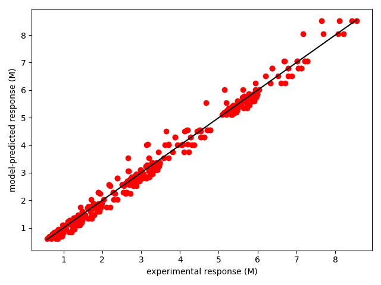
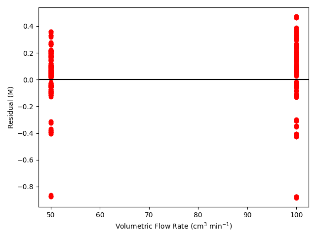
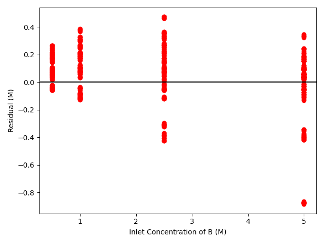
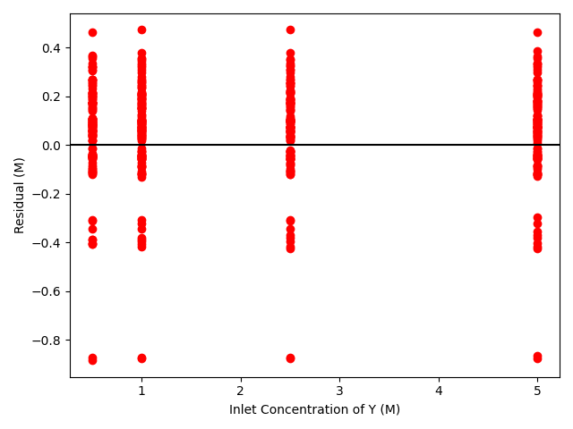
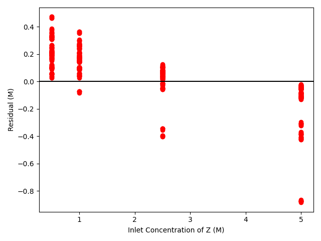
Click Here to See What an Expert Might be Thinking at this Point
The 95% confidence interval for \(k\), 743 to 854 L mol-1 min-1, is approximately plus or minus 7% of its estimated value, 796 L mol-1 min-1. There is some scatter apparent in the parity plot, and the coefficient of determination is 0.988. These factors suggest that the rate expression is reasonably accurate. The residuals plots for \(\dot{V}\) and \(C_Y\) show random deviations of the residuals about zero, too. However, in the residuals plots for \(C_A\) and \(C_B\) the residuals at low concentration do not scatter equally about zero. The residuals for \(C_Z\) show a definite trend, decreasing steadily as \(C_Z\) increases. This suggests that the reaction rate may have some functional dependence on the concentration of Z that is not captured in the rate expression.
Assessment
The rate expression is reasonably accurate, but there are indications that the rate expression may not fully capture the dependence of the rate on the concentration of reagent Z. Rate expressions that include a functional dependence on the concentration of Z should be postulated and assessed to determine whether they can represent the experimental results more accurately.
Note
In this example, the accuracy of the rate expression is reasonable, but the indication that the rate depends on the concentration of Z is a concern. In a real-world study, there would be blocks of data at other temperatures. If the same trends were observed for each data block, the recommendation to try different rate expressions that include functional dependence on Z would be supported. If none of the other temperature blocks showed these trends, it might be recommended that the rate expression was reasonably acceptable.
11.5.2 Analysis of Data for a Gas-Phase Reaction with Change of Total Moles
Preliminary experiments have indicated that gas-phase reaction (1) is irreversible and that the rate is not affected by the concentration of the product Z. To generate kinetics data, experiments were performed in blocks where the temperature of every experiment in the block was the same. An ideal CSTR operating at 3 atm was used for all experiments. The feed in every experiment contained only reagents A and B. The space time and the mole fraction of A were varied from experiment to experiment, and the outlet concentration of Z was measured. The block of experiments where the temperature was equal to 450 °C is presented below. Use those data to assess the accuracy of the rate expression shown in equation (2) where the power-law reaction orders, \(\alpha_A\) and \(\alpha_B\), must be estimated along with the rate coefficient, \(k\).
\[ A + B \rightarrow Z \tag{1} \]
\[ r = kP_A^{\alpha_A} P_B^{\alpha_B} \tag{2} \]
The first few data points are shown in Table 11.3. The full data set is available in the file reb_11_2_data.csv.
| \(\tau\) (s) | yA,in | CZ,out (mmol L-1) |
|---|---|---|
| 30 | 0.1 | 0.56 |
| 30 | 0.2 | 0.94 |
| 30 | 0.3 | 1.70 |
| 30 | 0.4 | 2.17 |
| 30 | 0.5 | 2.87 |
| 30 | 0.6 | 3.33 |
Click Here to See What an Expert Might be Thinking at this Point
This problem describes reactor experiments, provides the data from the experiments, and asks me to assess the accuracy of a rate expression, so it is a kinetics data analysis problem. Knowing that I will be creating a response function, I’ll start by listing the reactor type, constants given in the problem statement, the adjusted experimental inputs, the experimental response, and the rate expression parameters I need to estimate.
Reactor: CSTR
Given: \(P = 3 \text{ atm}\) and \(T = 450 + 273.15 \text{ K}\).
Adjusted Inputs: \(\underline{\tau}\) and \(\underline{y}_{A,in}\).
Experimental Response: \(\underline{C}_Z\).
Rate Expression Parameters: \(k\), \(\alpha_A\), and \(\alpha_B\).
Click Here to See What an Expert Might be Thinking at this Point
I need to generate a response function that predicts the responses using the rate expression. To start, I need a model for the reactor. Referring back to Chapter 6, I know that when the reactor operates at a known temperature, the mole balances can be solved independently from the other design equations, so all I need here is a set of mole balances for this reactor. The mole balance design equation for a steady-state CSTR with only one reaction taking place is given in Equation 11.1.
\[ 0 = \dot{n}_{i,in} - \dot{n}_i + \nu_i r V \]
The stoichiometric coefficients of A, B, and Z are -1, -1 and 1, respectively. The problem also states that the feed contained only reagents A and B, so the inlet molar flow rate of reagent Z is equal to zero. Substitution of those values leads to equations (3) through (5).
Reactor Model
Mole balances on A, B, and Z are shown in equations (3) through (5).
\[ 0 = \dot{n}_{A,in} - \dot{n}_A - rV \tag{3} \]
\[ 0 = \dot{n}_{B,in} - \dot{n}_B - rV \tag{4} \]
\[ 0 = \cancelto{0}{\dot{n}_{Z,in}} - \dot{n}_Z + rV \tag{5} \]
Click Here to See What an Expert Might be Thinking at this Point
Within the response function I will need to numerically solve equations (3) through (5) for the outlet molar flow rates of A, B, and Z. To do that, I must provide equations for calculating every other quantity in the equations from those unknowns and known constants. So I’ll go through each of the mole balances, and any equations that will be substituted into them, and write equations for the quantities other than the unknowns and known constants.
At first, looking at the mole balances, it appears that I’m not given sufficient information, but upon careful reading of the problem statement I see that all of the quantities provided are intensive quantities. When that is true, I can choose the value for one extensive quantity and use it as the basis for my calculations. I’m going to choose a reactor volume of 1 L as the basis for my calculations.
The mole balance design equations also contain the inlet molar flow rates of A and B. The problem statement does not provide any flow rates, but having chosen a volume as a basis, I can use the definition of space time, Equation 6.1, (which is one of the adjusted inputs) to calculate the inlet volumetric flow rate. Then I can use the ideal gas law to calculate the total inlet molar flow rate and the inlet mole fractions of A and B to calculate their inlet molar flow rates.
When I substitute the rate expression into the mole balances, that will introduce the partial pressures of A and B. Equations for the partial pressures can be written using the unknowns and the defining equation for partial pressure. The rate coefficient and the reaction orders will be passed to the response function as arguments, so I don’t need equations for them.
Ancillary Equations
\[ V = 1 \text{ L }\left( \text{Basis} \right) \tag{6} \]
\[ \dot{V}_{in} = V/\tau \tag{7} \]
\[ \dot{n}_{in,\text{total}} = \frac{P\dot{V}_{in}}{RT} \tag{8} \]
\[ \dot{n}_{A,in} = y_{A,in}\dot{n}_{in,\text{total}} \tag{9} \]
\[ \dot{n}_{B,in} = \left(1 - y_{A,in}\right)\dot{n}_{in,\text{total}} \tag{10} \]
\[ P_A = y_A P = \frac{\dot{n}_A}{\dot{n}_A + \dot{n}_B + \dot{n}_Z}P \tag{11} \]
\[ P_B = y_B P = \frac{\dot{n}_B}{\dot{n}_A + \dot{n}_B + \dot{n}_Z}P \tag{12} \]
Click Here to See What an Expert Might be Thinking at this Point
At this point the mole balances can be solved numerically for the outlet molar flow rates of A, B, and Z. This will be done within the response function, and then the results must be used to calculate the response predicted by the model. In this problem the response is the concentration of Z in the stream leaving the reactor. That can be calculated using the ideal gas law, Equation 11.2.
Response Calculation
\[ C_Z = \frac{\dot{n}_Z}{\dot{V}} = \frac{\dot{n}_ZP}{\dot{n}_{\text{total}}RT} = \frac{\dot{n}_ZP}{\left(\dot{n}_A + \dot{n}_B + \dot{n}_Z\right)RT} \tag{13} \]
Response Function
The response function is created with the following structure.
- The adjusted inputs, \(\underline{\tau}\) and \(\underline{y}_{A,in}\), and the rate expression parameters, \(k\), \(\alpha_A\), and \(\alpha_B\), are passed to it as arguments.
- Variables are defined and assigned the values of all known and given quantities, \(P = 3 \text{ atm}\) and \(T = 450 + 273.15 \text{ K}\), and the basis, equation (6).
- A function is defined that evaluates the reactor equation residuals (the right-hand sides of equations (3) through (5)), given values of the unknowns, \(\dot{n}_A\), \(\dot{n}_B\), and \(\dot{n}_Z\). It
- Calculates the inlet volumetric and molar flow rates, equations (7) and (8).
- Calculates the inlet molar flow rates of A and B, equations (9) and (10).
- Calculates the partial pressures of A and B, equations (11) and (12).
- Calculates \(r\) using equation (2).
- Evaluates and returns the residuals, equations (3) through (5).
- For each experiment, the response function
- Solves the reactor design equations numerically to find \(\dot{n}_A\), \(\dot{n}_B\), and \(\dot{n}_Z\).
- Calculates \(C_Z\) using equation (13).
- The predicted values of \(C_Z\) for all of the experiments are returned.
Click Here to See What an Expert Might be Thinking at this Point
Having created the response function, I can now use it to estimate the rate expression parameters, \(k\), \(\alpha_A\), and \(\alpha_B\), at the experimental temperature, 450 °C. To do so I will use parameter estimation software of my choosing. I will write a simple program that passes the adjusted inputs, the measured responses, and a guess for the rate expression parameters to that parameter estimation software. It will return the best estimate for \(k\), \(\alpha_A\), and \(\alpha_B\), some measure of the uncertainty in \(k\), \(\alpha_A\), and \(\alpha_B\), and the coefficient of determination, \(R^2\).
Using the resulting values of \(k\), \(\alpha_A\), and \(\alpha_B\), I can calculate the model-predicted responses for all of the experiments using the response function. Then, knowing the model-predicted responses I can calculate the residual (difference between the measured response and the model-predicted response) for each eperiment. Finally, as described in Chapter 8, I can create a parity plot and residuals plots.
Calculations
- Pass the response function, the adjusted inputs, the experimental responses, and a guess for the rate expression parameters to parameter estimation software to find \(k\), \(\alpha_A\), and \(\alpha_B\), the uncertainty in \(k\), \(\alpha_A\), and \(\alpha_B\), and the coefficient of determination, \(R^2\).
- Use the resulting values of \(k\), \(\alpha_A\), and \(\alpha_B\) to calculate the model-predicted response, \(C_{Z,\text{model}}\), for every experiment.
- Create a parity plot (\(C_{Z,\text{model}}\) vs. \(C_{Z,\text{expt}}\)) and parity plots (\(C_{Z,\text{model}} - C_{Z,\text{expt}}\) vs. \(\underline{\tau}\) and vs. \(\underline{y}_{A,in}\).
Results
The reactor model described above was fit to the experimental data presented in Table 11.3 using parameter estimation software. The results are presented in Table 11.4. A parity plot is shown in Figure 11.2 and residuals plots are shown in Figure 11.3.
| k | 4.51 x 10-5 mol L-1 s-1 atm1.903, 95% CI [4.36 x 10-5, 4.67 x 10-5] |
| \(\alpha_A\) | 1.35 , 95% CI [1.27, 1.42] |
| \(\alpha_B\) | 0.558 , 95% CI [0.514, 0.601] |
| R2 | 0.995 |
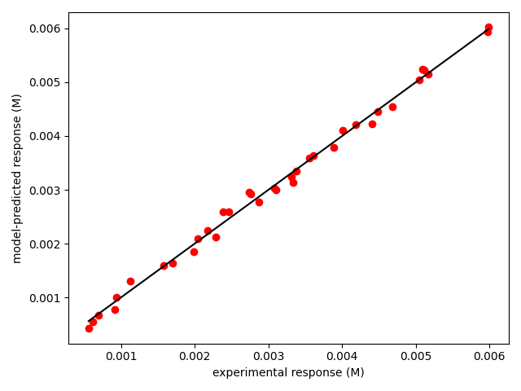
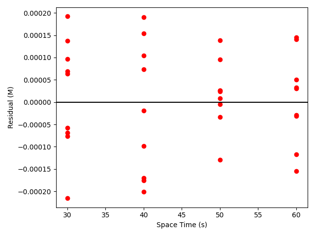
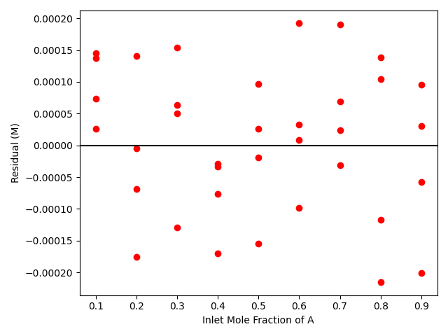
Click Here to See What an Expert Might be Thinking at this Point
The deviations of the data points from the line in the parity plot are small, the deviations of the residuals about zero are random with no apparent trends, the coefficient of determination is close to 1, and the upper and lower limits of the 95% confidence intervals for all three parameters are close to the estimated parameter value. All of these are indicators of an accurate model.
Assessment
When used with the rate expression parameters shown in Table 11.4, the accuracy of the proposed rate expression in describing the concentration dependence of the rate at 450 °C is acceptable.
11.5.3 Analysis of Data for a Reversible Reaction
The liquid-phase disproportionation of reagent A, reaction (1), is reversible. Kinetics data were generated in a 3 gal CSTR by varying the volumetric flow rate and the feed concentrations of reagents A, Y, and Z from experiment to experiment. In each experiment the outlet concentration of reagent A was measured. One of the constant temperature blocks of data is presented below; use it to assess the accuracy of the rate expression shown in equation (2). Note that thermodynamic data to calculate the equilibrium constant for reaction (1) are not available, so both the forward and reverse rate coefficients in the rate expression must be estimated from the experimental data.
\[ A \leftrightarrows Y + Z \tag{1} \]
\[ r = k_fC_A^2 - k_rC_YC_Z \tag{2} \]
The first few data points are shown in Table 11.5. The full data set is available in the file reb_11_3_data.csv.
| \(\dot{V}\) (gal min-1) | CA,in (lbmol gal-1) | CY,in (lbmol gal-1) | CZ,in (lbmol gal-1) | CA,out (lbmol gal-1) |
|---|---|---|---|---|
| 0.5 | 0.01 | 0.00 | 0.00 | 0.0068 |
| 0.5 | 0.01 | 0.00 | 0.01 | 0.0067 |
| 0.5 | 0.01 | 0.00 | 0.02 | 0.0071 |
| 0.5 | 0.01 | 0.00 | 0.03 | 0.0074 |
| 0.5 | 0.01 | 0.01 | 0.00 | 0.0071 |
| 0.5 | 0.01 | 0.01 | 0.01 | 0.0082 |
Click Here to See What an Expert Might be Thinking at this Point
This is a kinetics data analysis assignment, and to solve it I will need to create a response function. I will begin by summarizing the information provided in the problem statement.
Reactor: CSTR
Given: \(V = 3 \text{ gal}\).
Adjusted Inputs: \(\underline{\dot{V}}\), \(\underline{C}_{A,in}\), \(\underline{C}_{Y,in}\), and \(\underline{C}_{Z,in}\).
Experimental Response: \(\underline{C}_{A,out}\).
Rate Expression Parameters: \(k_f\) and \(k_r\).
Click Here to See What an Expert Might be Thinking at this Point
I need to create a response function that solves the reactor design equations and predicts the response for each data point. Since the CSTR operated at a known temperature, I only need mole balances to model it. There are 3 reagents in this system, so I’ll write Equation 11.1 for each of them.
\[ 0 = \dot{n}_{i,in} - \dot{n}_i + \nu_i r V \]
The stoichiometric coefficients of A, Y, and Z, are -1, 1, and 1, respectively, leading to equations (3) through (5).
Reactor Model
Mole balances on A, Y, and Z are shown in equations (3) through (5).
\[ 0 = \dot{n}_{A,in} - \dot{n}_A - rV \tag{3} \]
\[ 0 = \dot{n}_{Y,in} - \dot{n}_Y + rV \tag{4} \]
\[ 0 = \dot{n}_{Z,in} - \dot{n}_Z + rV \tag{5} \]
Click Here to See What an Expert Might be Thinking at this Point
Within the response function I need to solve equations (3) through (5) for \(\dot{n}_A\), \(\dot{n}_Y\), and \(\dot{n}_Z\). The adjusted inputs and the rate expression parameters will be provided to the response function. To solve the reactor design equations, I need to express every other quantity appearing in or substituted into equations (3) through (5) in terms of \(\dot{n}_A\), \(\dot{n}_Y\), \(\dot{n}_Z\) and known constants. Looking at equations (3) through (5) I can see that I will need expressions for the inlet molar flow rates, \(\dot{n}_{A,in}\), \(\dot{n}_{Y,in}\), and \(\dot{n}_{Z,in}\). I know the volumetric flow rate and the inlet concentrations of the reagents, so those expressions are straightforward.
When the rate expression is substituted into the mole balances it introduces the concentrations of the reagents. This is a steady-state, liquid phase system, so the volumetric flow rate is constant. Knowing that, Equation 1.15 can be used to express the concentrations in terms of the unknowns in terms of their molar flow rates.
\[ C_i = \frac{\dot n_i}{\dot V} \]
Ancillary Equations
\[ \dot{n}_{A,in} = C_{A,in}\dot{V} \tag{6} \]
\[ \dot{n}_{Y,in} = C_{Y,in}\dot{V} \tag{7} \]
\[ \dot{n}_{Z,in} = C_{Z,in}\dot{V} \tag{8} \]
\[ C_A = \frac{\dot{n}_A}{\dot{V}} \tag{9} \]
\[ C_Y = \frac{\dot{n}_Y}{\dot{V}} \tag{10} \]
\[ C_Z = \frac{\dot{n}_Z}{\dot{V}} \tag{11} \]
Click Here to See What an Expert Might be Thinking at this Point
Once the reactor design equations have been solved, the resulting values of \(\dot{n}_A\), \(\dot{n}_Y\), and \(\dot{n}_Z\) must be used to predict the experimental response. In this study, the response was the outlet concentration of A, and that can be calculated using equation (9).
Response Function
The response function is created with the following structure.
- The adjusted inputs, \(\underline{\dot{V}}\), \(\underline{C}_{A,in}\), \(\underline{C}_{Y,in}\), and \(\underline{C}_{Z,in}\), and the rate expression parameters, \(k_f\) and \(k_r\), are passed to it as arguments.
- A variable is defined and assigned the value of the known and given quantity, \(V = 3 \text{ gal}\).
- A function is defined that evaluates the reactor equation residuals (the right-hand sides of equations (3) through (5)), given values of the unknowns, \(\dot{n}_A\), \(\dot{n}_Y\), and \(\dot{n}_Z\). It
- Calculates the inlet molar flow rates of A, Y, and Z, equations (6), (7), and (8).
- Calculates the concentrations of A, Y, and Z, equations (9), (10), and (11).
- Calculates \(r\) using equation (2).
- Evaluates and returns the residuals, equations (3) through (5).
- For each experiment, the response function
- Solves the reactor design equations numerically to find \(\dot{n}_A\), \(\dot{n}_Y\), and \(\dot{n}_Z\).
- Calculates \(C_A\) using equation (9).
- The predicted values of \(C_A\) for all of the experiments are returned.
Click Here to See What an Expert Might be Thinking at this Point
Having created the response function, I can now use it to estimate the rate expression parameters, \(k_f\) and \(k_r\), at the experimental temperature. To do so I will use parameter estimation software of my choosing. I will write a simple program that passes the adjusted inputs, the measured responses, and a guess for the rate expression parameters to that parameter estimation software. It will return the best estimates for \(k_f\) and \(k_r\), some measure of the uncertainty in \(k_f\) and \(k_r\), and the coefficient of determination, \(R^2\).
Using the resulting values of \(k_f\) and \(k_r\), I can calculate the model-predicted responses for all of the experiments using the response function. Then, knowing the model-predicted responses I can calculate the residual (difference between the measured response and the model-predicted response) for each eperiment. Finally, as described in Chapter 8, I can create a parity plot and residuals plots.
Calculations
- Pass the response function, the adjusted inputs, the experimental responses, and a guess for the rate expression parameters to parameter estimation software to find \(k_f\) and \(k_r\), the uncertainty in \(k_f\) and \(k_r\), and the coefficient of determination, \(R^2\).
- Use the resulting values of \(k_f\) and \(k_r\) to calculate the model-predicted response, \(C_{A,\text{model}}\), for every experiment.
- Create a parity plot (\(C_{A,\text{model}}\) vs. \(C_{ZA,\text{expt}}\)) and residuals plots (\(C_{A,\text{model}} - C_{A,\text{expt}}\) vs. \(\dot{V}\), vs. \(C_{A,in}\), vs. \(C_{Y,in}\), and vs. \(C_{Z,in}\).
Results
To estimate the kinetics parameters, the response function described above was passed to parameter estimation software along with the adjusted experimental inputs, the experimental responses and a guess for the kinetics parameters. The results returned by that software are shown in Table 11.6.
| kf | 15.8 gal lbmol-1 min-1, 95% CI [15.1, 16.5] |
| kr | 5.02 gal lbmol-1 min-1, 95% CI [4.62, 5.46] |
| R2 | 0.985 |
The results from the parameter estimation were then used to create the parity plot shown in Figure 11.4 and residuals plots shown in Figure 11.5 as described in Chapter 8.
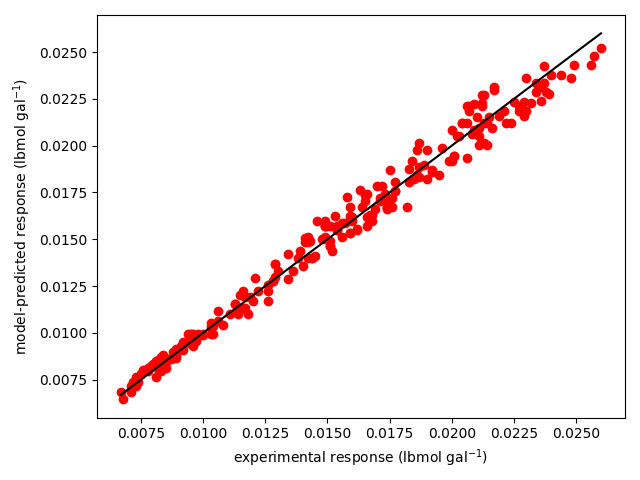
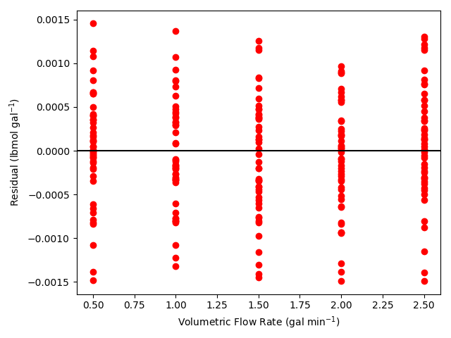
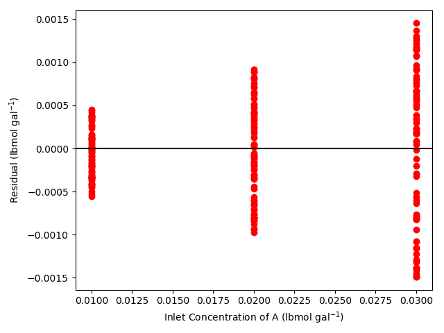
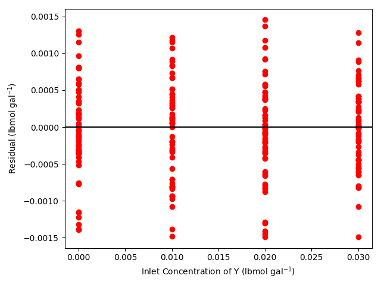
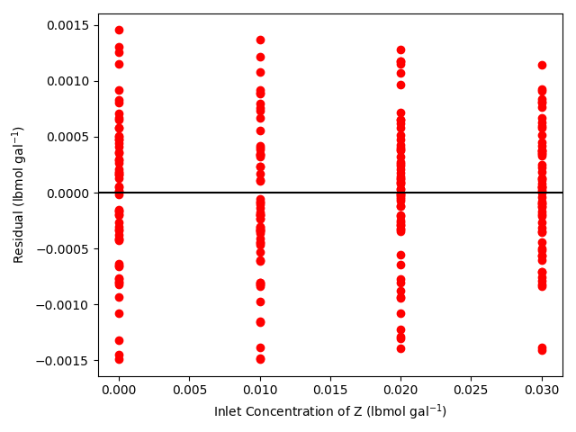
Click Here to See What an Expert Might be Thinking at this Point
The confidence intervals for \(k_f\) and \(k_r\) form a narrow range of values about the estimates and the coefficient of determination is close to 1.0. Both of these results suggest that the model is accurate. In the parity plot the experimental data all lie close to the line representing the model, and in the residuals plots, the deviations of the experimental residuals from zero appear to be random with no apparent trends. These graphical results also suggest that the model is acceptably accurate.
Assessment
When the rate coefficients in Table 11.6 are used in the rate expression, equation (2), it provides an acceptably accurate representation of the experimental results.
11.6 Symbols Used in Chapter 11
| Symbol | Meaning |
|---|---|
| \(i\) | index denoting a reagent. |
| \(k\) | Rate coefficient. |
| \(f\left(\right)\) | A mathematical function of the variables within the parentheses. |
| \(\dot{n}_i\) | Molar flow rate of reagent \(i\), an additional subscripted “in” denotes the flow into the reactor. |
| \(r\) | Net rate of reaction per unit fluid volume. |
| \(x\) | Independent variable in a linear model. |
| \(y\) | Dependent variable in a linear model. |
| \(y_i\) | Mole fraction of reagent \(i\). |
| \(C_i\) | Concentration of reagent \(i\). |
| \(P\) | Pressure. |
| \(P_i\) | Partial pressure of reagent \(i\). |
| \(R\) | Ideal gas constant. |
| \(T\) | Temperature. |
| \(V\) | Volume of fluid within the reactor. |
| \(\dot{V}\) | Volumetric flow rate. |
| \(\nu_i\) | Stoichiometric coefficient of reagent \(i\). |